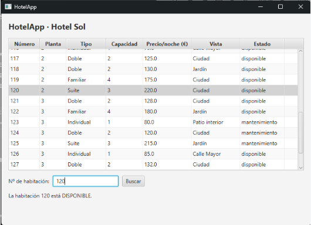

¿Qué hace el programa?
HotelApp es una aplicación de escritorio que muestra en una tabla la lista de habitaciones de un hotel (en este caso, el Hotel Sol) junto con sus detalles. La interfaz está construida con JavaFX y FXML.
Está diseñada para visualizar de un vistazo el inventario completo de habitaciones, sus características y su estado en tiempo real.
Funcionalidades
Listado de habitaciones
Tabla interactiva con todas las habitaciones del hotel y desplazamiento vertical para recorrerlas todas fácilmente.
Información detallada
Para cada habitación se muestra su número, planta, tipo, capacidad, precio por noche, vistas y estado actual.
Buscador por número
Escribe el número de habitación y pulsa «Buscar»: la app la selecciona automáticamente en la tabla e indica su estado.
Estados de una habitación
La columna «Estado» indica la situación en la que se encuentra cada habitación:
Disponible
Ocupado
Mantenimiento
Cómo se usa
- Abre la aplicación: verás la tabla principal con todas las habitaciones registradas.
- Desplázate por la tabla para consultar planta, tipo, capacidad, precio por noche, vistas y estado de cada habitación.
- Para localizar una habitación en concreto, introduce su número en el campo «Nº de habitación» en la parte inferior y pulsa Buscar.
- La aplicación resaltará la fila y mostrará un mensaje descriptivo, por ejemplo: «La habitación 120 está DISPONIBLE».
Vista previa de la interfaz

Tecnologías y requisitos
JavaJavaFXFXML
Para ejecutar el programa se requiere tener instalado Java JRE (versión 17 o superior) junto con las librerías de JavaFX.
Integrantes

Arturo Martín de la Sierra GarcíaProyecto individual: desarrollo de la lógica en Java, maquetación de la interfaz con FXML e integración con JavaFX.
Contexto del proyecto
Proyecto realizado durante el Grado Superior de Desarrollo de Aplicaciones Multiplataforma (DAM), enfocado en la creación de interfaces gráficas de usuario con JavaFX.